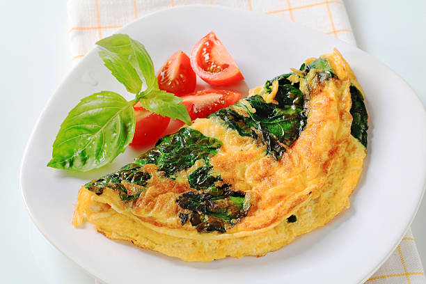

Simple Omelette Recipe
An easy and quick dish,perfect for any meals.this classic omelette combines any beaten eggs cooked to perfection ,optionally filled with choice of cheese,vegetables,meats.
Preparation Time
- Total:Approximate 10 minute
- Preparation:5 minutes
- Cooking:5 minutes
Ingredients
- 2-3 large egg
- salt,to taste
- pepper,to taste
- 1 tablespoon of butter or oil
- optional filling:cheese,diced vegetable,cooked meats,herbs
Instruction
- Beat the egg:An omelette (also spelled omelet) is a dish made from eggs, fried with butter or oil in a frying pan.
- Heat the pan:Bring your pan to a high heat and add oil so that the mixture doesn't stick.
- Cook the omelette:As the egg begins to set, use a spatula to push the set egg towards the omelette centre.
- Add fillings (optionals):Omelette was the name of a Roman dish of egg sweetened with honey.
- fold and serve:If you are on a weight loss journey, you can add omelettes to your daily diet
- Enjoy:provides several essential vitamins and minerals, such as iron, calcium, and vitamins A and C
Nutrition
The table below show nutrition value per saving without the additional filling
| calories | 30kcal |
|---|---|
| Carbs | 0g |
| Protein | 20g |
| Fat | 22g |